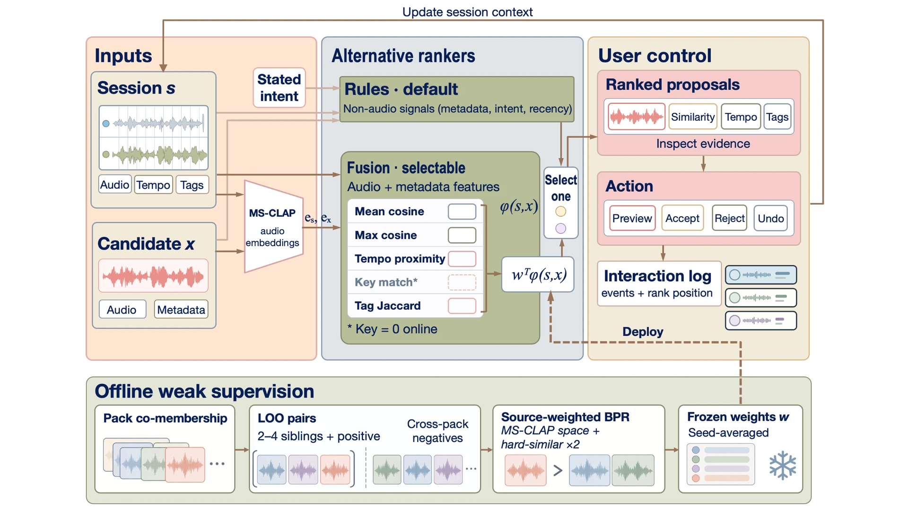

Session-conditioned retrieval that puts the musician in control — proposing sounds, loops, and ideas based on what you've already built, not just what's popular.

Pocket Producer addresses session compatibility: whether a library fragment is promising material for the same piece of music as the fragments already in a musician's open project. This is not the same as audio similarity — two fragments can sound alike but not belong in the same session.
With no direct labels at cold start, and audio similarity being only one observable signal (not the target itself), the system treats this missing-label problem as a ranking and an interaction-design challenge. It surfaces retrieved fragments as inspectable, reversible proposals the musician can preview, accept, and undo — not as automated decisions.
Pocket Producer reads the open session — project tempo, fragments' tags, and up to eight unique region-referenced samples embedded with CLAP — to form a session fingerprint. Five interpretable signals then score each candidate: mean and max CLAP cosine similarity, tempo proximity, key match, and tag Jaccard overlap.
Two rankers are available. The default is a hand-tuned rules ranker using seven non-audio signals (tempo, key, role gap, tag novelty, tag overlap, stated intent, recency). The alternative is a learned fusion trained by BPR on pack co-membership as cold-start weak supervision, and the musician can switch between them.
Ranking evidence stays inspectable (per-signal chips) and creative authority stays with the musician: candidates can be previewed, inserted, and undone, restoring the exact prior project state. All interaction events are logged with rank position to support future supervision.
Demo video
With no interaction data at launch, the fusion trains on pack co-membership from the Freesound Loop Dataset (1,797 items, 605 packs) as a weak-supervision proxy. But this proxy is a stand-in for the real target, not the target itself.
A three-axis sensitivity analysis shows that the fusion's apparent advantage over frozen cosine changes across label construction, negative regime, and representation/training configuration. Under LAION-CLAP with source-weighted BPR, fusion gains +9.9 pp on hard_similar negatives; under MS-CLAP the same setup shows +2.6 pp overall. Set these up differently, and you get different conclusions.
Rather than treating these proxy scores as answers, the system surfaces retrieval as inspectable, reversible proposals. Future work will replace the cold-start proxy with interaction-derived evidence and evaluate retrieval against musicians' creative choices.
ISMIR 2026 — Late-Breaking Demo · Abu Dhabi, UAE
Which fragments could grow into a piece of music with the ones already in a musician's open project? This target has no direct labels at cold start, and audio similarity is only one observable signal for it. Pocket Producer, a retrieval prototype evaluated offline, treats this missing-label problem as a ranking and an interaction-design challenge. It fingerprints the open session and ranks candidates with a rules default and a selectable fusion of five interpretable signals trained on pack co-membership as cold-start weak supervision. On the Freesound Loop Dataset, the learned fusion's apparent advantage varies with label construction, negative regime, and representation/training configuration. Pack co-membership is only a stand-in for the real target, and the conclusions shift with how the proxy is built and evaluated. We therefore surface retrieval as proposals the musician can inspect, preview, insert, and undo, not as automated decisions.